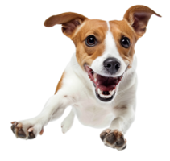

🐾🐾Historia🐾🐾

🐾🐾Historia🐾🐾

La Historia de Sparkle Veti
Todo comenzó cuando Laura adoptó a Max, un cachorro que le enseñó el verdadero significado del amor incondicional. Al enfrentarse a la dificultad de encontrar productos adecuados para él, Laura decidió abrir Sparkle Veti, un espacio especializado en ofrecer lo mejor para mascotas. Lo que comenzó como una pequeña tienda, pronto se convirtió en un lugar de confianza para los dueños de animales que buscaban calidad, atención personalizada y productos que mejoraran la vida de sus compañeros. Con el tiempo, el negocio creció, y ahora nuestra tienda no solo ofrece una amplia variedad de productos, sino también asesoramiento y servicios especializados para todo tipo de mascotas. Hoy, seguimos siendo el lugar donde cada mascota encuentra lo que necesita, todo gracias a la pasión de Laura por mejorar la vida de los animales y sus dueños.